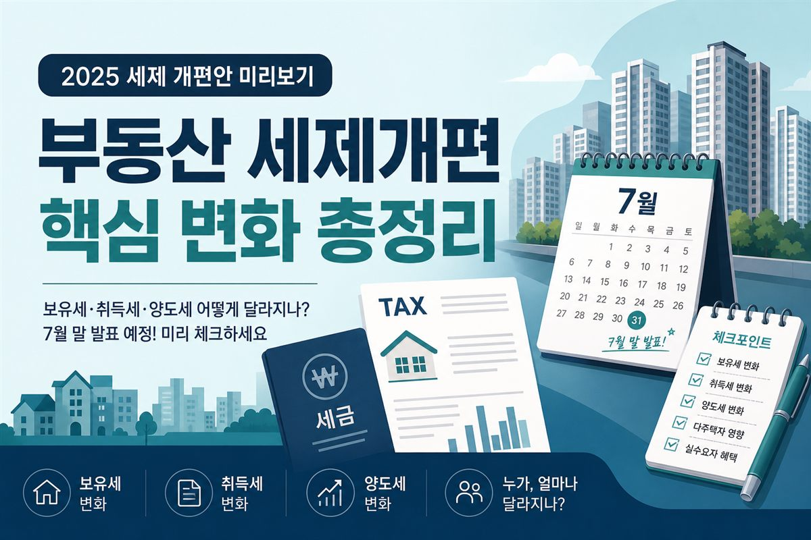
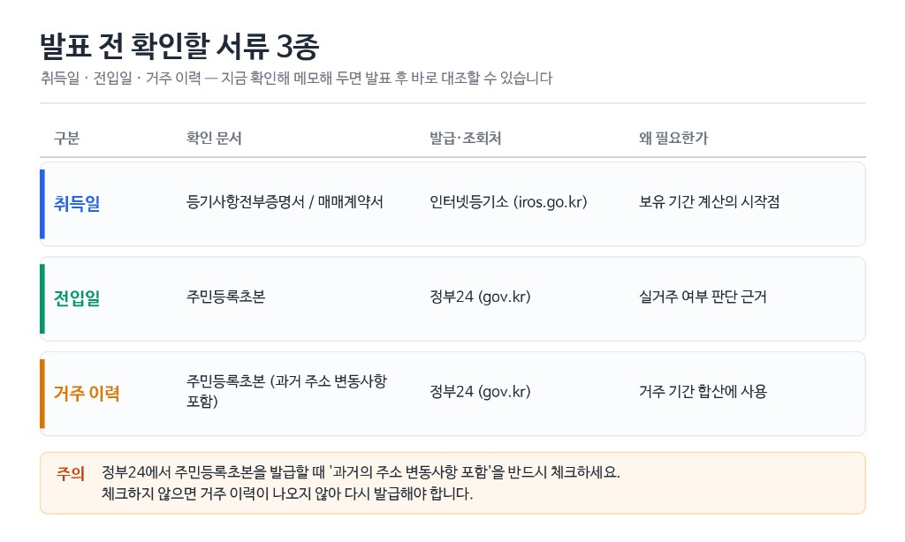
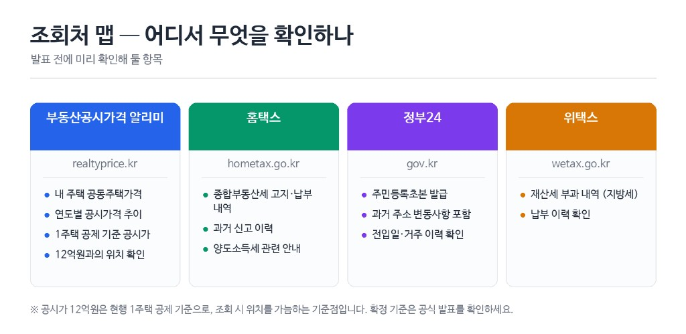

7월 부동산 세제개편 미리보기 — 무주택자·1주택자·다주택자, 지금 뭘 준비해야 할까 (2026.7.27)
발표 전 준비 실무 — 서류·조회처·상황별 할 일·발표 후 대조 (확정안 아님)

1. 도입 — 방향이 아니라 준비 목록
2026년 7월 27일 작성·8월 24일 보강 기준, 부동산 세제개편은 7월 말~8월 초 발표 예정으로 논의·관측이 이어지는 단계입니다. 보유세·장특공제·양도세가 한꺼번에 거론되지만, 확정 세율·기준금액·시행일은 아직 없습니다. 정책 방향·비교표·일정은 7월 세제개편 방향 총정리에 모아 두었습니다. 이 글은 그 옆에서, 발표 전에 내가 뭘 확인하고 준비해야 하나만 다룹니다.
생산관리 월급쟁이인 저도 처음엔 뉴스 제목만 모았습니다. 막상 발표가 나면 “내 취득일이 언제지?” “초본에 전입이 어떻게 찍혔지?”부터 찾게 됩니다. 그때 서류를 찾아 헤매면 시간이 두 배로 듭니다. 그래서 오늘은 서류 발급 절차, 조회처에서 무엇을 볼지, 왜 미리 적어 둬야 하는지를 실무 눈높이로 적습니다. 투자·매매 권유가 아닙니다.
먼저 읽어주세요
본 글은 정보 제공이며 세무·법률·투자 자문이 아닙니다. 표의 날짜·공시가 숫자는 견본(예시)이며, 독자 본인 서류·조회 결과로 바꿔 쓰세요. 확정 세율·공제율·기준금액은 기재하지 않습니다. 기획재정부·국세청 공식 발표와 전문가 상담을 기준으로 하세요.
- 내 상황을 한 줄로 적고, 취득·전입·거주 서류를 모읍니다.
- 공시가격 알리미·홈택스·정부24·위택스에서 무엇을 볼지 정리합니다.
- 발표 후 확정 문안과 대조할 견본 표를 남겨 둡니다.
2. 내 상황부터 한 줄로 적기
준비의 첫 단계는 “내가 어느 칸인지”를 한 줄로 고정하는 것입니다. 무주택인지, 1주택인지, 그 1주택에 실제로 사는지, 다주택인지에 따라 나중에 확정 문안을 읽을 때 대조하는 줄이 달라집니다. 정책이 어떻게 바뀌는지는 세제개편 영향 매트릭스를 보고, 여기서는 내 메모에 무엇을 적을지만 봅니다.
세대 기준도 함께 적으세요. “명의는 배우자, 전입은 나”처럼 섞여 있으면 발표 후 질문이 길어집니다. 아래 표는 빈칸이 아니라 견본 값입니다. 본인 상황에 맞게 고쳐 쓰세요.
| 상황 | 견본으로 적어 둘 한 줄 | 왜 미리 적나 |
|---|---|---|
| 무주택 | 무주택 · 세대원 주택 없음 · 청약통장 가입 2018-06 | 직접 세금보다 매수·청약 시점 판단에 씀 |
| 1주택·실거주 | 1주택 · 본인 전입 2019-05-02 · 계속 거주 | 거주 요건·장특 대조용 |
| 1주택·비거주 | 1주택 · 소유 서울A · 전입 인천B · 실거주 아님 | 비거주 논의 시 본인 칸 확인용 |
| 다주택 | 2주택 · A 2019 취득 · B 2022 취득 · A만 거주 | 보유/매도 시나리오 메모용 |
※ 표 값은 견본입니다. 본인 등기·초본·가족관계로 교체하세요.
3. 확인해야 할 서류 3종
발표가 나면 뉴스에 “실거주”, “취득일”, “보유 기간” 같은 단어가 나옵니다. 그때 머릿속 기억만으로는 대조가 안 됩니다. 미리 모아 둘 핵심은 세 가지입니다. 취득일, 전입일, 거주 이력입니다. 왜 필요한가? 확정 문안이 “언제부터 살았는가”, “언제 샀는가”를 물을 때 같은 날짜를 서류와 맞춰야 하기 때문입니다.
취득일 — 등기부등본·매매계약서
취득일은 “내가 언제 이 집을 갖게 됐는지”입니다. 매매계약서의 잔금일·소유권이전일과, 등기부등본 갑구의 소유권이전 등기일이 다를 수 있어 둘 다 보는 편이 안전합니다. 등기부등본은 인터넷등기소에서 열람·발급할 수 있습니다. 주소(또는 고유번호)로 검색한 뒤, 갑구에서 소유권이전 등기 원인·일자를 메모하세요. 견본: 취득일 2019-03-15 (등기부 갑구 소유권이전 기준). 인터넷등기소 절차는 대략 이렇습니다. 사이트 접속 → 부동산등기 열람/발급 → 소재지 주소 또는 고유번호 입력 → 해당 집합건물·토지를 선택 → 등기사항전부증명서(말소사항 포함 여부는 목적에 맞게) → 갑구에서 현재 소유자 명의와 등기 원인을 확인합니다. 공동명의면 지분 비율도 메모하세요. 발표 후 세대·명의 요건이 나오면 지분이 대조 포인트가 됩니다. 매매계약서가 있으면 계약일·잔금일도 옆에 적어 두면, 발표 후 “어느 날짜를 보느냐” 논란이 나와도 자료를 바로 펼 수 있습니다. 발급 PDF는 파일명을 “등기_A단지_20190315.pdf”처럼 날짜가 보이게 저장하는 편이 찾기 쉽습니다.
왜 미리 적나? 장특공제·양도세 이야기가 나오면 보유 기간 계산의 출발점이 취득일입니다. 개편안이 나와도 “내 취득일이 이 날짜”라는 사실은 바뀌지 않습니다. 바뀌는 것은 그 날짜에 어떤 요건을 적용할지이므로, 날짜부터 고정해 두는 것이 발표 후 대조의 첫 칸입니다.
전입일 — 주민등록초본
전입일은 “이 주소로 언제 옮겼는지”입니다. 실거주 여부를 말할 때 자주 꺼내지는 자료가 주민등록초본입니다. 정부24(gov.kr)에서 공동인증·간편인증 후 주민등록표 초본을 신청합니다. 여기서 실무 디테일: 발급 옵션에서 「과거 주소 변동사항 포함」을 체크하지 않으면 현재 주소만 나오고, 예전에 어디에 살았는지 이력이 빠질 수 있습니다. 거주 기간을 세려면 과거 변동사항이 포함된 초본이 필요합니다. 견본: 현 주소 전입일 2019-05-02, 직전 주소 전출 2019-05-01.
왜 미리 적나? “실거주냐 비거주냐” 논의가 나와도, 초본에 찍힌 전입·전출 날짜는 이미 있는 사실입니다. 발표 후 요건이 어떻게 정해지든, 그 날짜를 문안에 대입하려면 PDF나 출력본을 폴더에 넣어 두는 편이 훨씬 빠릅니다. 가족 세대가 갈라져 있으면 세대주·세대원 초본을 각각 받아 “누가 어디에 전입했는지”를 한 장에 정리하세요. 정부24 초본 신청 화면에서는 수령 방법(전자문서·출력)과 용도 칸이 있습니다. 용도는 “본인 확인·사실 확인” 정도로 두고, 열람만 하고 닫지 말고 파일을 받으세요. 모바일 앱으로 받으면 나중에 PC에서 날짜를 읽기 어려울 수 있어, PDF를 메일함이나 클라우드 한곳에 모아 두는 것을 권합니다. 전입일이 계약일·잔금일과 몇 주 차이 나는 것은 흔합니다. 견본처럼 취득 3월 15일·전입 5월 2일이면, 그 간격을 숨기지 말고 그대로 적으세요. 발표 문안이 “전입 후 며칠”을 말할 때 그 간격이 대조 대상이 됩니다.
거주 이력 — 초본 + 전입신고 흐름
거주 이력은 전입일 하나로 끝나지 않습니다. “그 주소에 얼마나 연속으로 살았는지”, “중간에 다른 곳으로 빠졌는지”가 이어집니다. 초본의 주소 변동 이력에 더해, 필요하면 정부24·주민센터에서 전입신고 관련 안내를 확인합니다. 견본 메모: 2019-05-02~현재 동일 주소 거주 · 중간 전출 없음. 초본을 펼치면 주소가 시간 역순 또는 연대순으로 쌓여 있습니다. 위에서 아래로 읽으며 “이 집 주소가 언제부터 언제까지인지”만 노란 형광펜으로 표시하세요. 직장 발령으로 6개월만 다른 시·군에 전입했다가 돌아온 기록이 있으면, 그 시작일·종료일을 별도 줄로 적습니다. 발표 문안이 연속 거주를 물을 때 그 줄이 필요합니다. 전입신고는 보통 전입한 날부터 14일 이내 등 법정 기한이 있으니, 실제 이사일과 신고일이 어긋난 적이 있는지도 초본 날짜와 맞춰 보세요. 이 글은 기한을 확정 해석하지 않습니다. 본인 초본 날짜와 주민센터·정부24 안내를 기준으로 하세요. 중간에 지방 발령으로 일시 전출했다면 그 기간도 날짜로 적어 두세요. 발표 문안에 “연속 거주” 같은 표현이 나올 때 바로 대조됩니다.

| 항목 | 확인 문서 | 발급·조회처 | 견본 값 |
|---|---|---|---|
| 취득일 | 등기부등본 갑구 · 매매계약서 | 인터넷등기소 · 보관 계약서 | 2019-03-15 (등기부 기준) |
| 전입일 | 주민등록초본 | 정부24 (과거 주소 변동사항 포함) | 2019-05-02 전입 |
| 거주 이력 | 초본 주소 변동 · 전출입 기록 | 정부24 · 주민센터 | 2019-05-02~현재 연속 거주 |
※ 견본입니다. 본인 서류 날짜로 교체하세요.
초본 발급 시 자주 놓치는 체크
- 정부24 → 주민등록표 초본 → 과거 주소 변동사항 포함 선택
- 열람만 하고 저장을 안 하면 나중에 다시 발급해야 합니다. PDF 저장 권장
- 배우자·자녀 전입이 다르면 각자 초본을 받아 세대 구성을 맞춰 보세요
4. 조회처 맵 — 공시가·홈택스·정부24·위택스
서류가 날짜라면, 조회처는 “지금 숫자·고지를 어디서 보는지”입니다. 네 곳을 역할만 나눠 기억하세요. 부동산공시가격 알리미는 공시가, 홈택스는 국세(양도·종부세 관련 조회·신고 안내), 정부24는 초본 등 행정 서류, 위택스는 지방세(재산세 등) 쪽입니다. 세제개편 뉴스가 나와도 이 네 곳의 로그인·메뉴 위치는 바뀌지 않습니다. 미리 한 번씩 들어가 두면, 발표 후 “어디 가서 보지?”를 줄일 수 있습니다. 알리미에서 단지를 못 찾겠으면 도로명 전체와 동·호수를 나눠 검색해 보세요. 동일 단지에 전용면적이 여러 개면, 본인 등기 면적과 같은 호를 고르는 것이 핵심입니다. 옆집 타입 공시가를 적으면 발표 후 대조가 어긋납니다. 조회 화면을 캡처할 때는 연도(2026)가 보이게 찍으세요. 전년도 공시가와 나란히 두면, 나중에 “올해 공시가 오른 집” 뉴스와 내 숫자를 구분하기 쉽습니다.
공시가격 알리미(realtyprice.kr)에서는 주소·단지로 공동주택 공시가격을 조회합니다. 화면에 나온 연도별 공시가격을 메모하세요. 견본: 공시가 8.4억 (2026년). 현행 1주택 종부세 논의·집계에서 자주 나오는 공시가 12억원 초과 기준점은 “내 공시가가 그 선에 가까운지”를 보는 조회용으로만 적습니다. 대상 가구가 약 31.8만→48.7만(+53.5%)으로 집계·보도된 맥락은 세제개편 방향 총정리·종부세 개편 방향에 정리돼 있으니, 여기서는 내 공시가 숫자만 확보하면 됩니다.
홈택스(hometax.go.kr)에서는 로그인 후 양도소득세·종합부동산세 관련 안내·조회 메뉴 위치를 익혀 두세요. 발표 전에 세율을 예측해 계산기를 돌리라는 뜻이 아닙니다. “어디서 고지·신고 화면이 열리는지”를 알아 두는 준비입니다. 위택스(wetax.go.kr)는 재산세 납부·조회에 쓰입니다. 종부세(국세)와 재산세(지방세)를 한 사이트에서 다 보지 않는다는 점만 구분하면, 뉴스의 “보유세” 단어를 덜 헷갈립니다. 종부세 과세기준일 6월 1일은 현행 제도의 확정 사실로, “그해 6월 1일 기준으로 누가 납세의무자인지”를 이해할 때 참고합니다. 홈택스는 처음 들어가면 메뉴가 많아 헤맵니다. 준비 단계에서는 세액을 맞히지 말고, 로그인 → 인증서 유효기간 확인 → “양도소득세”, “종합부동산세”가 있는 조회·신고 안내 화면까지 한 번만 들어가 보세요. 위택스는 재산세 고지서를 이메일·앱으로 받아 왔다면 그 PDF를 공시가 폴더 옆에 두세요. 보유세 뉴스가 나와도 “지방세 고지 얼마”와 “국세 종부세”를 한 장에 섞지 않는 것이 실무입니다.

| 조회처 | 화면에서 찾을 것 | 견본 메모 |
|---|---|---|
| 공시가격 알리미 | 단지·동·호 · 연도별 공시가격 | 2026년 공시가 8.4억 |
| 홈택스 | 양도·종부세 안내·조회 메뉴 위치 | 로그인 확인 · 메뉴 경로 메모 |
| 정부24 | 주민등록초본 · 과거 주소 변동 포함 | 초본 PDF 저장 완료 |
| 위택스 | 재산세 고지·납부 조회 | 최근 재산세 고지 연도 확인 |
※ 8.4억 등은 견본. 알리미 조회 결과로 교체. 12억·집계 수치는 세제개편 방향 총정리의 논의·집계 맥락을 참고.
공시가 ≠ 시세
이웃이 말한 매매가와 알리미 공시가는 다릅니다. 종부세 집계 이야기는 공시가 기준입니다.
6월 1일 기준일
종부세 과세기준일(현행)을 알아 두면, 연중 소유 변동 메모를 정리할 때 기준점이 됩니다.
5. 무주택자 준비 항목
무주택자는 이번 세제개편의 직접 대상이 아닌 경우가 많습니다. 보유세·장특·양도는 이미 집을 가진 사람에게 더 직접 닿습니다. 다만 발표 전후 시장 심리·매물·호가가 흔들리면, 매수 시점·자금·청약 일정을 판단할 때 간접으로 쓰입니다. 지금은 “세금 계산”보다 “자격·일정·여유 자금이 정리돼 있는가”만 짧게 보면 됩니다.
청약 가점·통장 납입·분양 일정 상세는 이 글에서 길게 다루지 않습니다. 청약 필수 용어, 청약통장 납입금액, 청약 가점 계산기, 분양 알리미로 넘깁니다. 무주택 관점 에세이는 대토론회 보면서 든 생각을 참고하세요.
6. 1주택자 준비 — 실거주 vs 비거주
1주택자 준비의 핵심은 “내가 그 집에 실제로 살고 있는가”를 서류 날짜로 보여줄 수 있는지입니다. 정책이 실거주·비거주를 어떻게 나눌지는 발표를 봐야 하고, 그 방향 설명은 세제개편 방향 총정리의 장특공제 섹션에 있습니다. 여기서 할 일은 전입일·거주 연속 여부·공시가 위치를 메모하는 것입니다.
실거주 견본 메모: 소유 주택 주소 = 초본 현주소, 전입 2019-05-02, 취득 2019-03-15, 공시가 8.4억(2026). 비거주 견본 메모: 소유는 서울 A단지, 전입은 인천 B주소, A에는 전입 기록 없음. 두 경우 모두 확정 공제율을 가정해 계산하지 마세요. 발표 문안이 나오면 위 날짜를 그대로 대입하는 것이 목적입니다. 실거주 쪽은 전입 후 공과금·관리비 명의가 본인인지까지 맞춰 볼 필요는 이 단계에서 필수가 아닙니다. 다만 초본 주소와 등기 주소가 한 글자라도 다르면(행정동 개편·도로명 변경) 알리미·등기소 검색이 안 될 수 있어, 둘 다 캡처해 두는 편이 안전합니다. 비거주 쪽은 “전세 준 집”인지 “부모 집 명의만 본인”인지 한 줄로 구분해 두면, 발표 후 상담 때 설명 시간이 줄어듭니다. 세율 가정은 하지 마세요.
공시가가 12억 선에 가까운지 먼지는 알리미 숫자로만 확인합니다. 12억은 현행 1주택 관련 집계·논의에서 반복되는 기준점이지, 개편안의 확정 한도가 아닙니다. “내 공시가 8.4억 → 12억과 差額 약 3.6억”처럼 거리감만 적어 두면, 발표 후 기준선이 나와도 대조가 빠릅니다.
-
주소 일치 여부
등기 주소 vs 초본 현주소 — 같으면 실거주 쪽 메모, 다르면 비거주 쪽 메모 -
전입·취득 순서
견본: 취득 2019-03-15 → 전입 2019-05-02 (약 48일 뒤 전입) -
공시가 연도
알리미에서 2026년 값과 직전 연도 값을 나란히 저장
7. 다주택자 준비 — 시나리오만 적어 두기
다주택자는 뉴스에 “중과”, “유예”, “보유세”가 자주 붙습니다. 다주택 양도세 중과 유예 연장은 없을 관측, 양도세 1년 유예 거론 등은 세제개편 방향 총정리에 관측·거론으로 정리돼 있습니다. 이 글에서는 세율을 채우지 않습니다. 대신 “보유할 경우 / 일부를 정리할 경우”에 어떤 항목을 적어 둘지만 준비합니다.
시나리오 A(계속 보유) 견본 메모: A주택 거주 · B주택 비거주 · B 취득 2022-08-10 · B 공시가 6.2억(2026) · 대출 잔액은 은행 앱 잔액 그대로 기입. 시나리오 B(B만 매도 가정) 견본 메모: 매도 희망 시기(예: 2026년 4분기) · 취득일 2022-08-10 · 거주 여부 없음 · 대체 주거 필요 여부 없음. 세금 칸은 “발표 후 기입”으로 비워 두지 말고, 「확정 문안 확인 후 세무사 상담」이라고 적어 두세요. 빈칸보다 “상담 전”이 행동 지시가 됩니다.
개별 취득 시기·담보·세대 구성에 따라 결과가 크게 달라집니다. 가정만으로 큰 매매를 결정하지 말고, 시나리오 메모를 들고 세무 전문가 상담을 권합니다. 주택이 세 채 이상이면 표를 직접 만들어 ① 소재지 ② 취득일 ③ 공시가 연도값 ④ 전입 여부 ⑤ 대출 유무 다섯 칸만 채우면 됩니다. 세율 칸은 비우지 말고 “발표·상담 후”라고 적으세요. 공시가가 다른 연도로 섞이면 합산 감각이 틀어지니, 조회 연도를 2026으로 통일하는 견본을 권합니다.
8. 발표 후 대조 체크리스트
발표가 나오면 보도자료·개정안 요약을 열고, 아래 견본처럼 내 값과 문안 항목을 한 줄씩 맞춥니다. 대조할 때는 기사 제목이 아니라 기획재정부 보도자료 본문 문장을 복사해 옆에 붙이세요. “강화”, “완화” 같은 헤드라인 단어는 요건 문장과 다를 수 있습니다. PDF 검색창에 “1주택”, “거주요건”, “시행일”만 쳐도 해당 페이지로 이동합니다. 목적은 “지금 당장 사거나 파는 것”이 아니라, 해당·비해당을 빠르게 가리는 것입니다.
| 확정 문안에서 볼 항목 | 내 견본 값 | 대조 결과 예시 |
|---|---|---|
| 적용 시행 시기 | 메모: 2027년 적용 관측(발표 전) | 발표문에 적힌 시행일으로 교체 |
| 1주택 공시가·공제 관련 | 공시가 8.4억 (2026) | 문안 기준선과 대소 비교 |
| 실거주·전입 요건 | 전입 2019-05-02 · 연속 거주 | 요건 충족 여부 체크 |
| 취득·보유 기간 | 취득 2019-03-15 | 보유 연수 계산 후 기입 |
| 다주택 양도·유예 | 2주택 · B 2022-08-10 취득 | 해당 시 상담 일정 잡기 |
※ 견본. 확정 세율은 비워 두지 말고 “공식 발표·상담 후 기입”으로 표시하세요.
-
① 보도자료 PDF 저장
기획재정부·국세청 원문을 로컬에 보관 · 요약 기사만 보지 않기 -
② 내 폴더 열기
등기·초본·공시가 캡처를 같은 폴더에 모아 두었는지 확인 -
③ 한 줄 판정
“해당 / 비해당 / 상담 필요” 중 하나만 먼저 표시 -
④ 실행은 나중
매도·매수·증여는 판정·상담 이후로 미루는 편이 안전
9. 자주 하는 실수·오해
첫 실수는 제목만 보고 급히 파는 것입니다. “1년 유예”는 거론일 뿐 확정이 아닙니다. 유예 기간·대상이 발표문에 적히기 전에 세율을 가정하면 자기 상황에 해당하지 않는 규제를 전제할 수 있습니다.
둘째는 시세와 공시가를 섞는 것입니다. “우리 단지 10억에 거래됐다”와 알리미 공시가 8.4억은 다른 숫자입니다. 12억 집계 이야기도 공시가 기준입니다.
셋째는 초본을 대충 발급하는 것입니다. 과거 주소 변동사항을 빼면 거주 이력이 안 나와, 발표 후 “연속 거주”를 증명하려다 다시 발급하게 됩니다.
넷째는 재산세 고지와 종부세를 한곳으로 아는 것입니다. 위택스와 홈택스 역할을 나누어 두면, “보유세” 뉴스에 덜 휘둘립니다. 공정시장가액비율 현행 약 60%·거론 시나리오 80% 같은 숫자는 개념 설명이 필요할 때 세제개편 방향 총정리·공정시장가액비율 시나리오를 보고, 준비 단계에서는 “내 공시가 숫자”만 확보하면 충분합니다.
10. 자주 묻는 질문 + 마무리
Q1. 발표 전에 집을 팔면 어떤 세율이 적용되나?
양도세는 원칙적으로 양도 시점의 세법을 따릅니다.
개편안이 확정·시행되기 전이면 현행 규정이 기준이 되는 경우가 많습니다.
다만 계약일·잔금일·등기일 해석과 개별 요건이 있어 단정하지 않습니다.
국세청 안내·세무 상담으로 확인하세요.
Q2. 공시가격은 어디서 보나?
국토교통부 부동산공시가격 알리미(realtyprice.kr)에서
주소·단지별 공시가격을 조회합니다.
견본처럼 “2026년 8.4억” 형식으로 메모해 두면 발표 후 대조가 쉽습니다.
Q3. 실거주·비거주는 뭘로 증명하나?
실무에서는 주민등록초본의 전입·주소 변동,
등기 주소와의 일치 여부를 먼저 봅니다.
개편안의 확정 요건은 발표 후 공식 문안을 따라야 합니다.
지금은 초본(과거 주소 포함)을 받아 날짜를 고정하세요.
Q4. 종부세 대상인지 미리 알 수 있나?
확정 고지 전에도 공시가와 현행 기준점을 대조해
“12억 선과의 거리”를 가늠할 수는 있습니다.
1주택 공시가 12억 초과는 현행·집계 맥락의 기준점이며,
개편안 확정 한도가 아닙니다.
최종 납부 대상·세액은 관할 안내·홈택스를 확인하세요.
Q5. 지금 급히 팔거나 사면 되나?
확정되지 않은 세율을 가정한 급매매는 위험할 수 있습니다.
서류·공시가·시나리오 메모를 준비해 두고,
발표·상담 후 판단하는 편이 안전합니다.
투자 권유가 아닙니다.
정리하면, 발표 전 할 일은 “세율 맞히기”가 아니라 취득일·전입일·거주 이력·공시가를 서류와 조회처에서 고정하는 것입니다. 정책 방향은 세제개편 방향 총정리, 대토론회 맥락은 대토론회 총정리를 보세요. 숫자는 기획재정부·국세청·알리미·홈택스가 정본입니다.
| 상황 | 우선 할 일 (견본) |
|---|---|
| 무주택 | 직접 세금 대비보다 자금·일정 메모 · 청약은 필수 용어·납입금액·도구로 |
| 1주택·실거주 | 초본(과거주소 포함)·등기 취득일·공시가 8.4억 형 메모 |
| 1주택·비거주 | 소유지 vs 전입지 주소 분리 메모 · 거주 이력 정리 |
| 다주택 | 주택별 취득일·공시가·거주 여부 · A/B 시나리오 · 상담 일정 |
📎 출처·참고

본 글은 정보 제공 목적이며 발표 전 논의·관측 단계의 준비 실무를 정리한 것입니다. 표의 날짜·금액은 견본입니다. 투자·법률·세무 자문이 아니며, 확정 내용은 기획재정부·국세청 공식 발표와 전문가 상담으로 확인하시기 바랍니다.